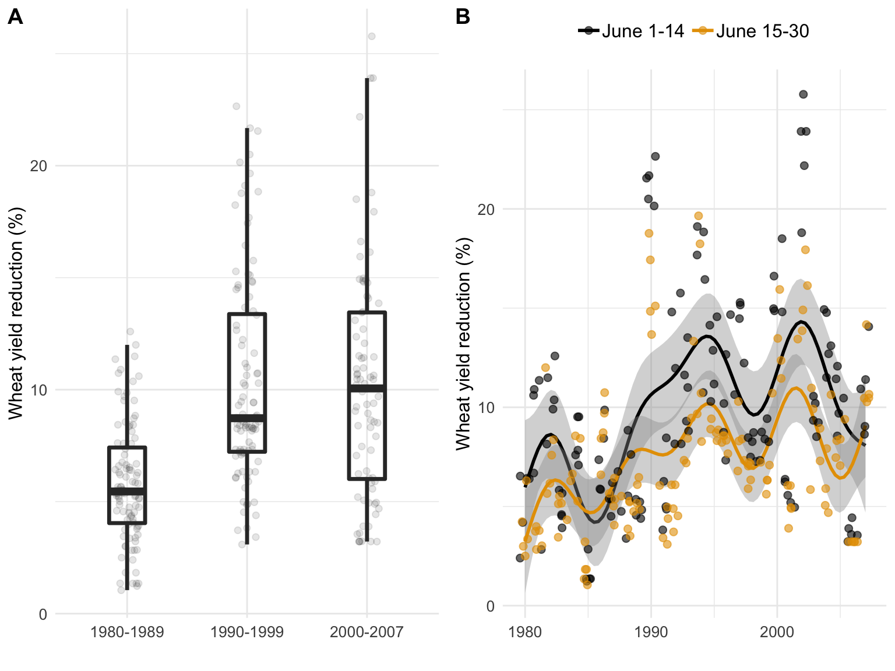
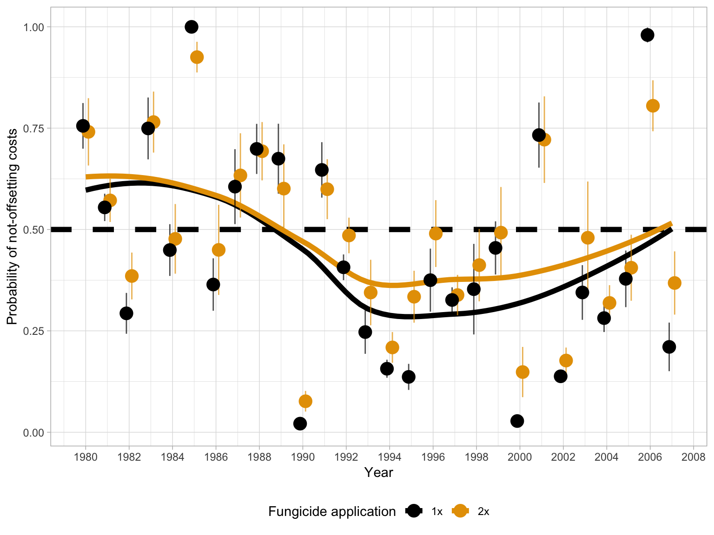

Plots
knitr::opts_chunk$set(
fig.width = 8, fig.height = 6, fig.path = "Figures/",
warning = FALSE, message = FALSE
)Here we show the scripts that produce the publication-ready plots for the article. There is a hidden script (see the Rmd file) to prepare the data for the plots including variable creation and transformation.
Fig 2
Results for the fit of a simple linear model to wheat yield (kg ha-1) and FHB index (%) for both crop situations of A, high yield or B, low yield. Results for the fit of a random-coefficient model to wheat yield (kg ha-1) and FHB index (%) with the population-average predictions (thick solid black) of absolute (kg ha-1) and relative yield (%) and respective 95% confidence interval (thick dashed black) for C and E, high yield or D and F, low yield.
Import and prepare data
# Import data
fhb_dat <- read.csv("data/fhb_data_new.csv") %>%
group_by(trial)
# Transforming the data to character
fhb_dat$yield_class <- as.character(fhb_dat$yield_class)
# Changing the names of categorical variables
fhb_dat$yield_class[fhb_dat$yield_class == "low"] <- "Low yield"
fhb_dat$yield_class[fhb_dat$yield_class == "high"] <- "High yield"Regression analysis
High yield scenario
high <- fhb_dat %>%
filter(yield_class != "Low yield")
reg_high <- high %>%
ggplot(aes(sev, yield)) +
geom_smooth(
method = "lm", fullrange = TRUE, se = F, size = 0.7,
color = "grey70", aes(group = factor(trial))
) +
geom_point(size = 1.5, alpha = 0.3, colour = "black", width = 0.1) +
xlim(0, 100) +
ylim(0, 7000) +
theme(legend.position = "left") +
theme(
axis.text = element_text(size = 10),
axis.title = element_text(size = 12)
) +
theme(plot.title = element_text(hjust = 0.5, size = 12)) +
theme(panel.spacing = unit(1, "lines"), strip.text.x = element_text(size = 14)) +
labs(
x = "",
y = expression("Wheat yield " ~ (kg ~ ha^{
-1
})),
title = "Baseline yield: High"
)Low yield scenario
low <- fhb_dat %>%
filter(yield_class != "High yield")
reg_low <- low %>%
ggplot(aes(sev, yield)) +
geom_smooth(
method = "lm", fullrange = TRUE, se = F, size = 0.7,
color = "grey70", aes(group = factor(trial))
) +
geom_point(size = 1.5, alpha = 0.3, colour = "black", width = 0.1) +
# scale_y_continuous(limits = c(0, 7000)) +
ylim(0, 7000) +
xlim(0, 100) +
# scale_x_continuous(limits = c(0,100)) +
theme(legend.position = "none") +
theme(
axis.text = element_text(size = 10),
axis.title = element_text(size = 12)
) +
theme(plot.title = element_text(hjust = 0.5, size = 12)) +
theme(panel.spacing = unit(1, "lines"), strip.text.x = element_text(size = 14)) +
labs(
x = "",
y = "",
title = "Baseline yield: Low"
)Combine plots
grid_reg <- plot_grid(reg_high, reg_low, ncol = 2, labels = c("A", "B"), align = "h", rel_widths = c(1, 1), rel_heights = c(1, 1), label_size = 12)Population average
High yield
abs_loss_high <- ggplot(fhb_dat, aes(sev, yield)) +
ylim(0, 5500) +
xlim(0, 100) +
theme(legend.text = element_text(size = 14)) +
theme(axis.text = element_text(size = 10)) +
theme(text = element_text(size = 12)) +
theme(plot.title = element_text(hjust = 0.5)) +
labs(
x = "",
y = expression("Wheat yield " ~ (kg ~ ha^{
-1
})), title = ""
) +
geom_abline(aes(intercept = 4419.48, slope = -46.31), size = 1.3, linetype = "solid") +
geom_abline(aes(intercept = 4118.91, slope = -71.03), size = 1.0, linetype = "dashed") +
geom_abline(aes(intercept = 4721.40, slope = -27.40), size = 1.0, linetype = "dashed")Low yield
abs_loss_low <- ggplot(fhb_dat, aes(sev, yield)) +
ylim(0, 5500) +
xlim(0, 100) +
theme(axis.text = element_text(size = 10)) +
theme(plot.title = element_text(hjust = 0.5)) +
theme(text = element_text(size = 12)) +
labs(
x = "",
y = "",
title = ""
) +
geom_abline(aes(intercept = 2883.51, slope = -46.31), size = 1.3, linetype = "solid") +
geom_abline(aes(intercept = 2162.74, slope = -71.03), size = 1.0, linetype = "dashed") +
geom_abline(aes(intercept = 3610.03, slope = -27.40), size = 1.0, linetype = "dashed")
grid_abs_loss <- plot_grid(abs_loss_high, abs_loss_low, ncol = 2, labels = c("C", "D"), rel_heights = c(1, 1), rel_widths = c(1, 1), align = "h", label_size = 12)Population-average predictions - Relative loss
High yield scenario
relative_loss_high <- fhb_dat %>%
ggplot(aes(sev, yield)) +
xlim(0, 100) +
ylim(0, 100) +
theme(axis.text = element_text(size = 10)) +
theme(text = element_text(size = 12)) +
labs(
x = "FHB index (%)",
y = expression("Wheat yield (%)")
) +
geom_abline(aes(intercept = 100, slope = -1.05), size = 1.3, linetype = "solid") +
geom_abline(aes(intercept = 100, slope = -1.72), size = 1.0, linetype = "dashed") +
geom_abline(aes(intercept = 100, slope = -0.58), size = 1.0, linetype = "dashed")Low yield scenario
relative_loss_low <- fhb_dat %>%
ggplot(aes(sev, yield)) +
xlim(0, 100) +
ylim(0, 100) +
theme(axis.text = element_text(size = 10)) +
theme(legend.position = "none") +
theme(text = element_text(size = 12)) +
labs(
x = "FHB index (%)",
y = ""
) +
geom_abline(aes(intercept = 100, slope = -1.61), size = 1.3, linetype = "solid") +
geom_abline(aes(intercept = 100, slope = -3.28), size = 1.0, linetype = "dashed") +
geom_abline(aes(intercept = 100, slope = -0.75), size = 1.0, linetype = "dashed")
grid_rel_loss <- plot_grid(relative_loss_high, relative_loss_low, ncol = 2, labels = c("E", "F"), align = "h", rel_heights = c(1, 1), rel_widths = c(1, 1), label_size = 12)Combine all plots and produce the figure
plot_grid(grid_reg, grid_abs_loss, grid_rel_loss, ncol = 1, rel_heights = c(1.05, 1, 0.95), rel_widths = c(1, 1, 1), align = "v")
ggsave("figs/Fig_2_grid_all.png", width = 5.8, height = 8.1)Fig 3
Relative yield loss estimated by a phenology-based model in a 28-year period (1980 to 2007) for Passo Fundo, RS, Brazil. Box-plots in A represent the variability of the relative losses within three time periods. Relative yield loss in B represents the estimated values encompassing the sowing dates before and after 15 June, with the fitted smoothing lines of the generalized additive model for both sowing periods.
simul_loss <- read.csv("data/yield_loss_simulations.csv")Summary per decade
box_dcd <- simul_loss %>%
ggplot(aes(class_year, relative_loss)) +
geom_jitter(size = 1.7, alpha = 0.1, colour = "black", width = 0.1) +
geom_boxplot(aes(group = class_year), width = 0.3, size = 1.2, fill = NA, outlier.colour = NA) +
scale_color_grey() +
labs(y = "Wheat yield reduction (%)", x = "") +
theme(axis.text = element_text(size = 10)) +
theme(text = element_text(size = 12))Summary per planting date
dist_planting <- simul_loss %>%
group_by(year) %>%
ggplot() +
geom_smooth(method = "gam", aes(year, relative_loss, color = class_sow), formula = y ~ x + s(x) + s(x, bs = "cr")) +
geom_jitter(aes(year, relative_loss, color = class_sow), position = "jitter", size = 2, alpha = 0.6) +
# scale_color_manual(values = c("black", "grey50")) +
theme(legend.text = element_text(size = 12), text = element_text(size = 12), axis.text = element_text(size = 10), legend.position = "none") +
theme(legend.title = element_blank(), legend.position = "top") +
guides(color = guide_legend(override.aes = list(fill = NA))) +
theme(legend.key = element_blank()) +
scale_color_colorblind() +
labs(y = "Wheat yield reduction (%)", x = "", shape = "", color = "")Combine plots to produce the figure.
grid_dist1 <- plot_grid(box_dcd, dist_planting, labels = c("A", "B"), align = "v")
grid_dist1
ggsave("figs/Fig_3_dist.png", width = 8, height = 4, dpi = 300)Fig 4
Probability categories of non-offsetting on fungicide investment for different scenarios of wheat prices and fungicide costs (product price + operational costs) for A, one or B, two sprays (first spray at early to mid-flowering and a second 7 to 10 days later) for Fusarium head blight (FHB) control. Probability for each time period, encompassing the periods prior (1980-1989) and after (1990-1999, 2000-2007) FHB resurgence, was calculated using the estimates of the mean difference (D ̅), and respective between-year standard deviation (σ^2) obtained from the yield estimates with and without fungicide application for 28 growing seasons in Brazil.
# Import data
dat_simul <- read.csv("data/fungicide_simulations.csv")Plot for one spray
tetris_1x <- dat_simul %>%
mutate(Price = Price * 1000) %>%
filter(trat != "2x") %>%
mutate(class_year = case_when(
year < 1990 ~ "1980-1989",
year >= 1990 & year < 2000 ~ "1990-1999",
year >= 2000 ~ "2000-2007"
)) %>%
group_by(Cost, Price, trat, class_year) %>%
summarise(mean_prob = mean(prob)) %>%
mutate(prob1 = case_when(
mean_prob < 0.25 ~ "0% \u2264 p < 25% ",
mean_prob >= 0.25 & mean_prob < 0.50 ~ "25% \u2264 p < 50% ",
mean_prob >= 0.50 & mean_prob < 0.75 ~ "50% \u2264 p < 75% ",
mean_prob >= 0.75 ~ "75% \u2264 p < 100% "
)) %>%
ggplot(aes(factor(Cost), factor(Price), fill = prob1, label = prob1)) +
geom_tile(color = "white", size = 0.5) +
# scale_fill_brewer(palette = "YlOrRd")+
scale_fill_viridis(discrete = T, option = "E", begin = 0, end = 1) +
labs(x = "", y = "Wheat price (US$/ton) ", fill = "Probability of not-offsetting costs") +
theme(legend.position = "none") +
facet_grid(trat ~ class_year) +
theme(
text = element_text(size = 14),
strip.text.x = element_text(size = 12, face = "bold"),
strip.text.y = element_text(size = 12, face = "bold"),
panel.grid.major = element_line(colour = "white"),
legend.position = "none",
plot.title = element_text(hjust = 0.0, size = 14, face = "bold"),
axis.text.y = element_text(size = 12),
axis.text.x = element_text(size = 12)
)Plots for two sprays
tetris_2x <- dat_simul %>%
mutate(Price = Price * 1000) %>%
filter(trat != "1x") %>%
mutate(class_year = case_when(
year < 1990 ~ "1980-1989",
year >= 1990 & year < 2000 ~ "1990-1999",
year >= 2000 ~ "2000-2007"
)) %>%
group_by(Cost, Price, trat, class_year) %>%
summarise(mean_prob = mean(prob)) %>%
mutate(prob1 = case_when(
mean_prob < 0.25 ~ "0% \u2264 p < 25% ",
mean_prob >= 0.25 & mean_prob < 0.50 ~ "25% \u2264 p < 50% ",
mean_prob >= 0.50 & mean_prob < 0.75 ~ "50% \u2264 p < 75% ",
mean_prob >= 0.75 ~ "75% \u2264 p < 100% "
)) %>%
ggplot(aes(factor(Cost), factor(Price), fill = prob1, label = prob1)) +
geom_tile(color = "white", size = 0.5) +
# scale_fill_brewer(palette = "YlOrRd")+
scale_fill_viridis(discrete = T, option = "E", begin = 0, end = 1) +
labs(x = "Fungicide + application cost (US$/ha)", y = "Wheat price (US$/ton) ", fill = "Probability of not-offsetting costs") +
facet_grid(trat ~ class_year) +
theme(
text = element_text(size = 14),
strip.text.x = element_text(size = 12, face = "bold"),
strip.text.y = element_text(size = 12, face = "bold"),
panel.grid.major = element_line(colour = "white"),
plot.title = element_text(hjust = 0.0, size = 14, face = "bold"),
legend.justification = "center",
panel.grid.minor = element_line(colour = "white"),
legend.position = "bottom",
axis.text.y = element_text(size = 12),
axis.text.x = element_text(size = 12)
)
# GRID Fungicide
tetris_2x_none <- tetris_2x +
theme(legend.position = "none")
leg_with <- get_legend(tetris_2x) # omit legendCombine plots and produce the figure
plot_grid(tetris_1x, tetris_2x_none, leg_with, ncol = 1, rel_widths = c(1, 1, 1, 1), rel_heights = c(1, 1, 0.1), labels = c("A", "B"))
ggsave("figs/Fig_4_tetris.png", width = 10, height = 7, dpi = 300)Fig 5
Temporal series of the mean probability, and respective 95% confidence interval, of non-offsetting the costs (probability of loss) for benefit-cost ratios (wheat price / fungicide cost in US$, see ranges in Figure 4) ranging from 5 to 15. The probabilities were calculated for both one and two fungicide application.
# Import data
dat_simul <- read.csv("data/fungicide_simulations.csv")
dat_simul_1 <- dat_simul %>%
filter(Cost != 5, Cost != 35, Price != 0.1, Price != 0.25) %>%
mutate(Price = Price * 1000) %>%
mutate(class_year = case_when(
year < 1990 ~ "1980-1989",
year >= 1990 & year < 2000 ~ "1990-1999",
year >= 2000 ~ "2000-2007"
)) %>%
group_by(Cost, Price, trat, year) %>%
summarise(mean_prob = mean(prob)) %>%
filter(Price / Cost < 10.15 + 4.725073 & Price / Cost > 10.15 - 4.725073) %>%
group_by(year, trat) %>%
summarise(
n = length(mean_prob),
mean_prob2 = mean(mean_prob),
min_prob = mean_prob2 - qt(0.097, df = n - 1) * sd(mean_prob) / sqrt(n),
max_prob = mean_prob2 + qt(0.097, df = n - 1) * sd(mean_prob) / sqrt(n)
)
dat_simul %>%
filter(Cost != 5, Cost != 35, Price != 0.1, Price != 0.25) %>%
mutate(Price = Price * 1000) %>%
mutate(class_year = case_when(
year < 1990 ~ "1980-1989",
year >= 1990 & year < 2000 ~ "1990-1999",
year >= 2000 ~ "2000-2007"
)) %>%
group_by(Cost, Price, trat, year) %>%
summarise(mean_prob = mean(prob)) %>%
ggplot() +
geom_hline(yintercept = 0.5, linetype = 2, color = "black", size = 2) +
geom_smooth(
data = dat_simul_1, aes(year, mean_prob2, group = trat, color = trat),
se = F,
size = 2
) +
geom_errorbar(
data = dat_simul_1, aes(x = year, ymin = min_prob, ymax = max_prob, color = trat),
width = 0, size = 0.5, alpha = 0.7,
position = position_dodge(width = 0.5)
) +
geom_point(
data = dat_simul_1, aes(year, mean_prob2, color = trat),
size = 4.5, alpha = 1,
position = position_dodge(width = 0.5)
) +
scale_x_continuous(breaks = c(seq(0, 3000, by = 2))) +
scale_color_colorblind() +
# scale_color_manual(values = c("black", "gray40"))+
theme_light() +
guides(color = guide_legend(), size = guide_legend()) +
# facet_wrap(~trat)+
labs(
y = "Probability of not-offsetting costs",
x = "Year",
color = "Fungicide application",
fill = "Benefit-cost ratio ",
size = "Benefit-Cost ratio"
) +
theme(legend.position = "bottom")
ggsave("figs/Fig_5_Cost_benefit_mean.png", width = 7, height = 4, dpi = 300)Fig 1S
Let’s produce map that depicts the locations where the experiments were conducted and diplay the information on the mean number of experiments per site.
## OGR data source with driver: ESRI Shapefile
## Source: "/Users/emersondelponte/Documents/github/paper-FHB-yield-loss/data/shape-files-BRA/BRA_adm1.shp", layer: "BRA_adm1"
## with 27 features
## It has 16 fields